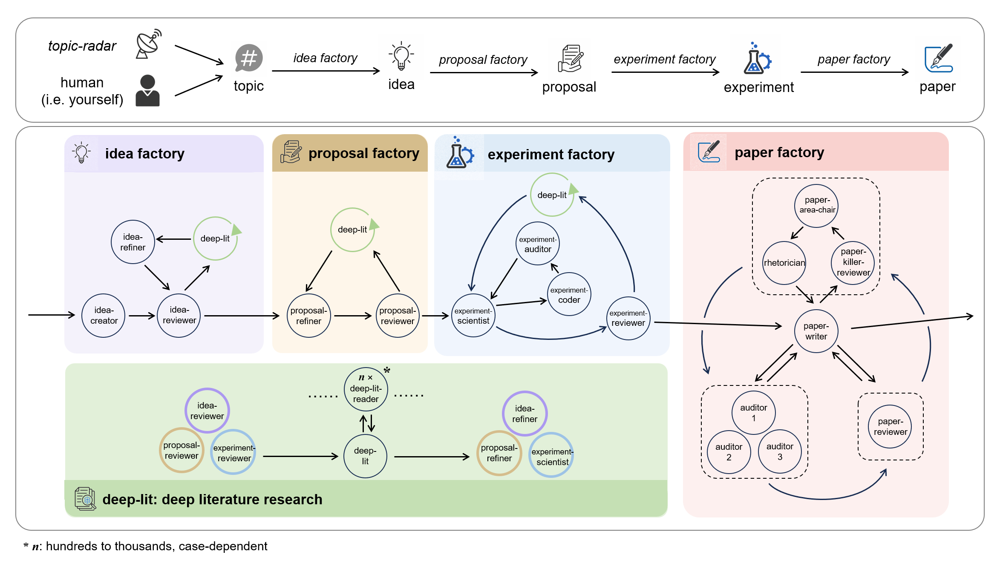

LMW / WORKSPACES / AUTO-RESEARCH-FACTORY
Agon · pinned 7a82c1d
Autonomous research workspace
AutoResearch Factory
Take a research question from topic radar to experiments, with every agent handoff visible.
Run
#018
Elapsed
08:42
Cost
$1.84
Research topology
Live execution graph waiting generating

Exact Agon workflow · interactive model/status overlaySource: AutoResearch-Factory/Agon